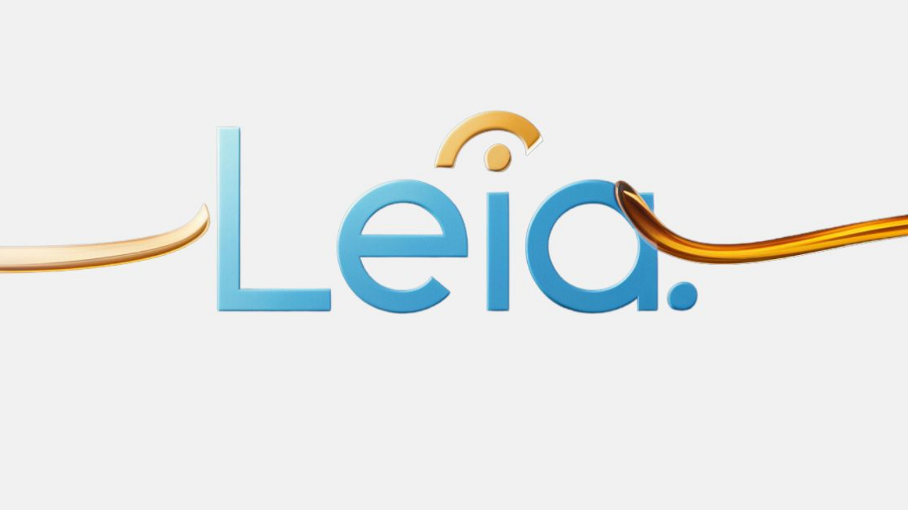

Blog & Notícias: Inovação e Impacto Social
Acompanhe as últimas novidades, dicas de carreira, análises sobre tecnologia e artigos especializados sobre a Lei da Aprendizagem e o futuro da empregabilidade jovem.
Destaques da Semana

A LEIA IA Decifra a Complexidade da Lei da Aprendizagem: Menos Burocracia, Mais Contratação
Nossa análise sobre como a Inteligência Artificial está se tornando a principal aliada de RHs para cumprir as cotas e otimizar o planejamento de novos programas de aprendizes.
Continuar Lendo →5 Dicas Essenciais para o Jovem Montar o Currículo Perfeito
Como usar as competências do Game APZ para impressionar em qualquer entrevista.
ESG e Impacto SocialO P de Produtiva: Como a Lei da Aprendizagem Vira Vantagem ESG
Entenda como transformar a contratação de aprendizes em um pilar forte de responsabilidade social.
Educação & GamificaçãoAlém da Missão JACI: O Poder do RPG no Desenvolvimento Profissional
A ciência por trás do Game APZ e como o lúdico acelera o aprendizado de competências.
Trilha na MídiaRecap: Entrevista de Erick e Helen no Jornal Nacional da Inovação
Compilado das principais falas dos fundadores sobre o impacto da startup na Amazônia.
Buscar e Filtrar
Categorias
Advogada Digital 24/7
Tem dúvidas sobre cotas, multas ou contratos? A LEIA IA resolve para você.
Fale com a LEIA IAPronto para a Carreira?
Descubra sua vocação, construa seu currículo e participe de seleções gamificadas.
Acesse o Game APZFala Aí, Aprendiz!
Ouça as histórias reais de jovens que transformaram suas vidas através da aprendizagem.
Ouvir PodcastA Trilha do Aprendiz na Mídia
Jornal A Crítica | 20/09/2025
Startup da Amazônia usa Gamificação para Recrutar Jovens Aprendizes
Leia a Matéria Completa →
G1 - Empreendedorismo | 15/08/2025
IA LEIA: A Inteligência Artificial que Ajuda Empresas na Lei da Aprendizagem
Leia a Matéria Completa →
TV Amazonas | 01/07/2025
Casal Empreendedor Explica Como o Mapa do Jovem Trabalhador Reduz a Evasão
Assista a Entrevista →